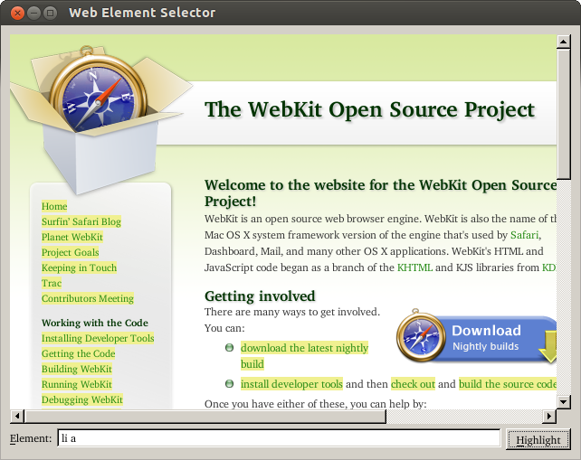

Simple Selector Example
The Simple Selector example shows how to use QWebElement to access the Document Object Model (DOM) in a Web page.

The QWebElement class enables access to the document structure and content in a Web page, as represented by a QWebFrame instance. It can be used for basic traversal of the document structure (see the DOM Traversal Example), to search for particular elements, and to modify any elements found.
This example uses a QWebView widget to display a Web page. A QLineEdit widget and QPushButton allow the user to enter a query and highlight the results in the page. These widgets are contained in an instance of the Window class, which we described below.
Window Class Definition
The Window class describes the example's user interface and this is partially described by the window.ui file, created using Qt Designer:
#include "ui_window.h" class Window : public QWidget, private Ui::Window { Q_OBJECT public: Window(QWidget *parent = 0); void setUrl(const QUrl &url); public slots: void on_elementLineEdit_returnPressed(); void on_highlightButton_clicked(); };
We use multiple inheritance to include the user interface description. We define slots that will automatically respond to signals emitted by certain user interface controls.
Window Class Implementation
Since the layout of the user interface is provided by the window.ui user interface file, we only need to call the setupUi() in the constructor:
Window::Window(QWidget *parent) : QWidget(parent) { setupUi(this); }
This adds all the controls to the window and sets up connections between their signals and suitably-named slots in the Window class. The QLineEdit instance was given a name of elementLineEdit in Qt Designer, so the on_elementLineEdit_returnPressed() slot is automatically connected to its returnPressed() signal.
This slot performs the main work of this example. We begin by obtaining a QWebFrame instance for the current page shown in the QWebView widget. Each QWebFrame contains a QWebElement instance that represents the document, and we obtain this in order to examine its contents:
void Window::on_elementLineEdit_returnPressed() { QWebFrame *frame = webView->page()->mainFrame(); QWebElement document = frame->documentElement(); QWebElementCollection elements = document.findAll(elementLineEdit->text()); foreach (QWebElement element, elements) element.setAttribute("style", "background-color: #f0f090"); }
Taking the contents of the QLineEdit as the query text, we call the element's findAll() function to obtain a list of elements that match the query.
For each element obtained, we modify its style by setting its style attribute to give it a yellow background color.
Since we also want the query to be performed when the user clicks the Highlight button, we also implement the on_highlightButton_clicked() slot to simply call the on_elementLineEdit_returnPressed() slot when it is invoked:
void Window::on_highlightButton_clicked() { on_elementLineEdit_returnPressed(); }
For completeness, we also implement a setUrl() function which simply passes on a QUrl instance to the equivalent function in the QWebView widget:
void Window::setUrl(const QUrl &url) { webView->setUrl(url); }
Starting the Example
The main function implementation is simple. We set up the application, create a Window instance, set its URL, and show it:
#include <QtWidgets> #include "window.h" int main(int argc, char *argv[]) { QApplication app(argc, argv); Window window; window.setUrl(QUrl("http://www.webkit.org")); window.show(); return app.exec(); }
When the application's event loop is run, the WebKit home page will load, and the user can then begin to start running queries against the contents of the page. The highlighting can only be removed by reloading the page. To do this, open a context menu over the page and select the Reload menu item.
Further Reading
The QWebElement documentation contains more information about DOM access for the QtWebKit classes.
In this example, we take advantage of Qt's auto-connection feature to avoid explicitly connecting signals to slots.
Files: